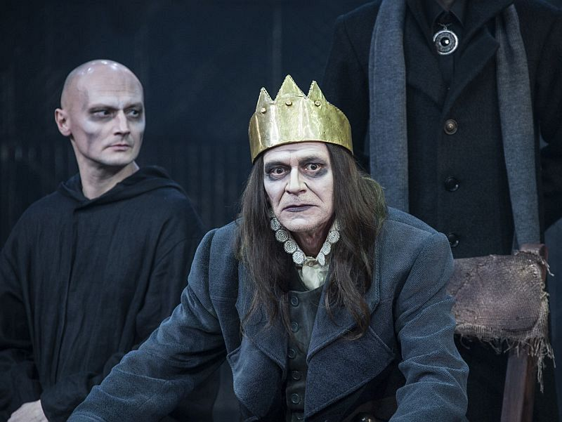
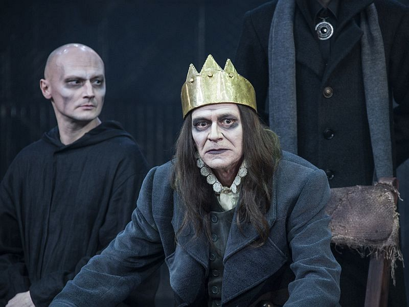

Классическая драма

 


Ричард III
Грузинский режиссер Автандил Варсимашвили поставил шекспировскую трагедию о гениальном узурпаторе эффектно и подробно. Артист Максим Севриновский, появлявшийся прежде в других спектаклях Вахтанговского театра только на втором плане, здесь занят в главной роли, и это большое событие: с ролей подобного масштаба принято начинать биографии главных артистов времени.
Расписание спектакля
24декабря, чт 19:30
17января, вс 19:30

Сказки Венского леса
Австрийского драматурга Эдена фон Хорвата, давно и хорошо знакомого немецкоговорящей публике, в России не знают вовсе. Его пьеса 1931 года — про обыкновенных жителей Вены, влюбляющихся и страдающих, праздно пикникующих и не сильно озабоченных экономическим кризисом, и главное — еще не знающих, что скоро война и мир изменится навсегда. Режиссер — молодой и вдумчивый Никита Кобелев, работающий в «Маяковке» уже несколько лет, поставивший здесь один из первых в Москве спектаклей-променадов «Декалог». Главные роли в «Сказках Венского леса» — Анастасия Дьячук и Вячеслав Ковалев, играющие на этой же сцене в «Изгнании» Миндаугаса Карбаускиса.
Расписание спектакля
20 декабря, вс 18:00
10 января, вс 18:00
Заповедник
Сергей Довлатов в конце 1970-х работал в Пушкинском музее в Михайловском. Этот факт биографии стал основой его, по сути, автобиографической повести «Заповедник» — герой преодолевает внутренний кризис, как по компасу сверяясь с поэзией Пушкина. В спектакле Сергея Женовача, помимо фронтменов труппы СТИ (Сергей Качанов, Анастасия Имамова, Ольга Калашникова, Катерина Васильева), почти в полном составе дебютирует недавно выпущенный им гитисовский курс.
Расписание спектакля
9 января, сб 19:00
17 января, вс 19:00
Влюбленный Шекспир
Драматург Том Стоппард любит пофантазировать, что было бы, если бы Ленин встретился в Цюрихе с дадаистами, или о том, как себя чувствуют второстепенные персонажи «Гамлета», пока главные действуют на сцене. Его «Влюбленный Шекспир» — мысленная реконструкция событий в жизни английского драматурга, предшествующих написанию «Ромео и Джульетты». Режиссер спектакля — тяготеющий к эстетике аристократического мюзикла Евгений Писарев.
Расписание спектакля
19 декабря, сб 19:00
8 января, пт 19:00
28 января, чт 19:00